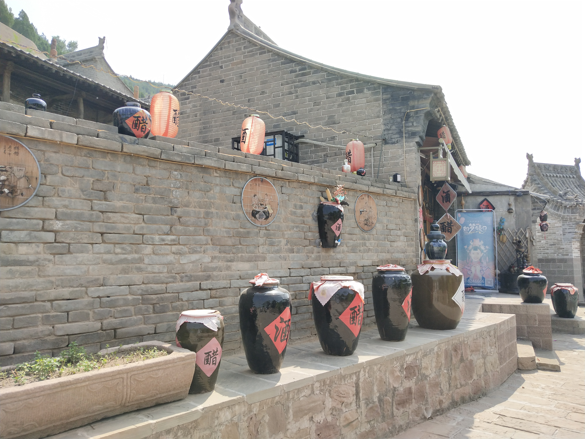
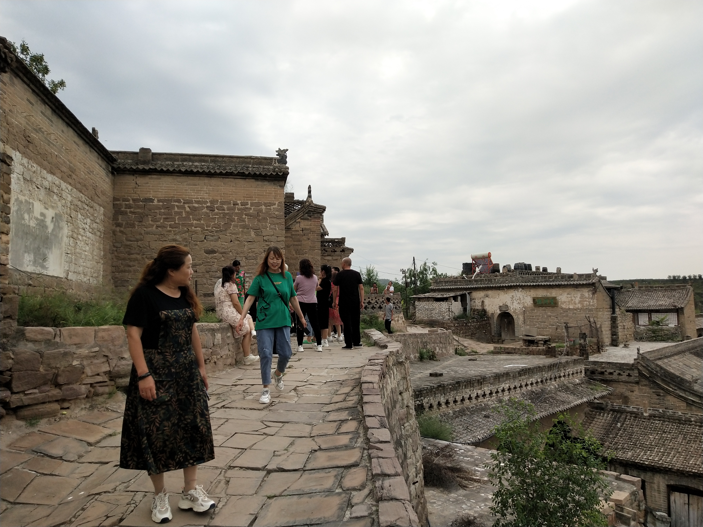

乡村振兴，共筑美好未来
Hunan South Dongting Lake wetland and waterfowl nature reserve
乡村振兴策略：详细介绍项目提出的乡村振兴策略，包括产业融合、人才培养、文化传承等方面。
这个项目提出了一系列综合性的乡村振兴策略，旨在促进乡村经济的发展、改善农村生活质量、推动乡村文化的传承和创新。以下是具体的策略内容：
1. 产业融合：
农业转型升级：鼓励农民采用先进的农业技术和管理模式，推动农业生产方式向绿色、有机、高效方向转变。
产业多元化发展：引导农村发展多种经济产业，如农业种植、畜牧业、乡村旅游、特色产业等，形成产业融合发展格局，提高乡村经济的整体效益和竞争力。
2. 人才培养：
农村人才培育计划：开展农村人才培训计划，培养一批具有现代农业经营管理和科技应用能力的专业人才，推动乡村产业发展和技术创新。
引进外部人才：招募外部专业人才来到乡村从事产业发展、农业科技推广等工作，促进乡村经济结构优化和产业升级。
3. 文化传承：
乡村文化挖掘：深入挖掘和保护乡村的历史文化资源和民俗风情，通过文化节庆、非遗传承等活动传承乡村文化，提升乡村的文化软实力。
文化创意产业发展：鼓励乡村开展文化创意产业，如乡村民宿、手工艺品制作、传统文化表演等，激发乡村文化创新活力，促进文化与经济的融合发展。
这些乡村振兴策略将有助于推动乡村经济的转型升级，改善农村居民生活条件，促进乡村文化的传承和创新，实现乡村振兴的可持续发展目标。

项目成果展示：展示项目在乡村振兴方面取得的成果和进展。
1. 经济发展：
农业产业升级：引进先进的农业技术和管理模式，推动农业生产方式向绿色、有机、高效方向转变。农产品品质提高，产值明显增加。
产业多元化发展：乡村发展了多种经济产业，如农业种植、畜牧业、乡村旅游、特色产业等，形成了产业融合发展的格局，提高了乡村经济的整体效益和竞争力。
2. 社会进步：
农民收入增加：农民通过参与新的产业项目，收入水平得到提升，生活质量明显改善。
就业机会增加：新产业的发展为当地居民提供了更多的就业机会，促进了农村劳动力的就业和转移。
3. 文化传承：
乡村文化挖掘：深入挖掘和保护乡村的历史文化资源和民俗风情，开展了丰富多彩的文化活动，如文化节庆、非遗传承等，提升了乡村的文化软实力。
文化创意产业发展：乡村开展了文化创意产业，如乡村民宿、手工艺品制作、传统文化表演等，激发了乡村文化创新活力，促进了文化与经济的融合发展。
4. 生态环境保护：
生态环境改善：项目实施过程中，注重生态环境的保护和修复，加强了对土地、水资源的合理利用和管理，改善了乡村的生态环境。

居民故事：
在这个乡村振兴项目中，有一位叫做王大爷的村民的故事尤为感人。
王大爷是当地的一名老农民，多年来一直在自家的小农田里务农，收入微薄。随着时代的变迁和农村经济的转型，他渐渐感受到了生活的压力和困境。
然而，随着乡村振兴项目的实施，一切都发生了改变。
王大爷参与了项目组组织的农业培训课程，学习了现代农业种植技术和管理方法。他开始尝试引进新的作物品种，并采用先进的种植技术，结果意想不到地收获了丰收的果实。他的收入从前的几百元增加到了几千元，生活质量得到了极大的改善。
更令人感动的是，王大爷还利用自家的闲置土地，开办了一家小型农家乐。他将家里的老房子重新装修一新，打造成了一个有着农家特色的小院子，为游客提供了农家餐饮和农耕体验服务。通过这个农家乐项目，不仅增加了他的收入，还为当地乡村旅游业的发展做出了贡献。
王大爷的故事感染了许多当地的村民，激发了他们参与乡村振兴项目的热情。他们纷纷效仿王大爷的做法，通过学习新技术、开展新产业，改变了自己的生活和家庭的命运。王大爷成为了乡村振兴项目的一面旗帜，他的故事也成为了激励更多村民融入项目的动力源泉。

合作与支持：呼吁社会各界共同支持和参与乡村振兴事业。
呼吁社会各界共同支持和参与乡村振兴事业是至关重要的。乡村振兴不仅仅是一个地方性的项目，更是关乎整个社会发展的大事。以下是一些呼吁内容：
1. 政府支持：希望政府能够加大对乡村振兴项目的政策支持和资金投入，为项目的顺利实施提供有力保障。政府可以通过制定相关政策和规划，为乡村振兴项目提供更多的政策倾斜和政策支持。
2. 企业参与：希望企业能够积极参与乡村振兴项目，发挥自身的技术和资源优势，为项目提供技术支持、资金支持和人才支持。企业可以通过开展合作项目、捐赠资金、提供技术支持等方式，为乡村振兴事业贡献自己的力量。
3. 社会组织支持：希望各类社会组织能够关注乡村振兴事业，积极参与到项目中来，为乡村振兴事业提供志愿服务和社会支持。社会组织可以通过组织义工活动、开展宣传推广等方式，为乡村振兴事业提供帮助和支持。
4. 公众参与：希望广大公众能够关注乡村振兴事业，积极参与到项目中来，为乡村振兴事业提供支持和帮助。公众可以通过购买当地特色产品、参加乡村旅游活动、宣传推广乡村振兴事业等方式，为乡村振兴事业贡献自己的一份力量。
通过社会各界的共同支持和参与，相信乡村振兴事业一定能够取得更加辉煌的成就，让乡村焕发出新的生机和活力，实现经济社会可持续发展的目标。让我们携起手来，共同为乡村振兴事业努力奋斗！